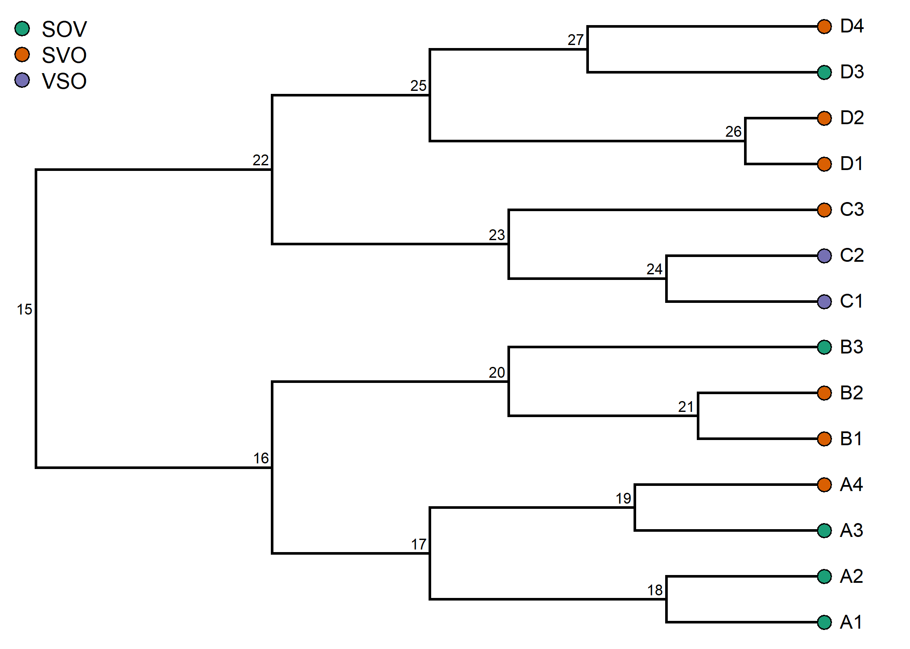
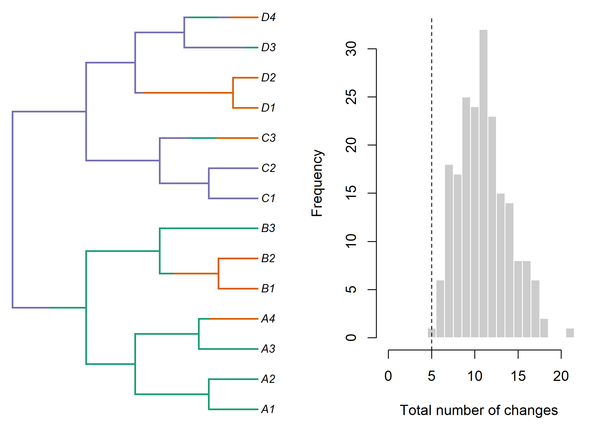
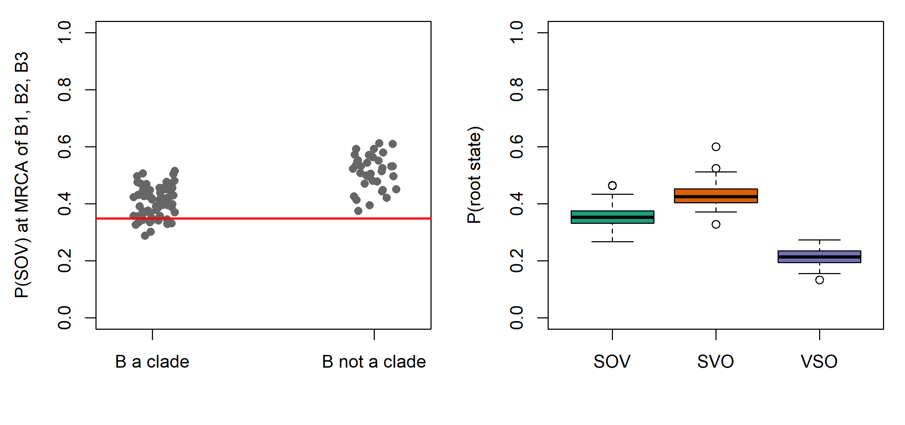

Chapter 12 Ancestral State Reconstruction
Historical linguistics is, at its core, a science of reconstruction. The comparative method recovers the sounds, words and grammatical structures of languages that were never written down, and Proto-Indo-European, Proto-Austronesian and Proto-Bantu are known to us only through such reconstruction. Evolutionary biology has its own, largely independent, tradition of ancestral state reconstruction (ASR): given a tree and the states of a character at its tips, infer the states at the internal nodes. The two traditions use the same word for different operations. This chapter develops the biological toolkit (parsimony, likelihood and Bayesian reconstruction, and stochastic character mapping), shows how its answers depend on the model, the root and the tree, and asks what it can add to the linguist’s own methods of reconstruction, and what it cannot replace.
After reading this chapter you should be able to:
- distinguish the reconstruction of coded character states, the reconstruction of historical linguistic forms (proto-forms and sound changes) and the reconstructions of the comparative method, and say what kind of evidence each uses;
- compute and interpret parsimony, marginal and joint reconstructions, and explain why marginal and joint answers can disagree;
- assess how root priors, rate models and hidden rate heterogeneity affect a reconstruction, and check which quantity a software function reports;
- use stochastic character mapping to count changes and explain why the counts exceed parsimony counts;
- reconstruct a named ancestor over a sample of trees, and explain why a reconstruction on a single MCC tree can mislead;
- evaluate published reconstructions of the proto-lexicon, of grammar and of sound systems, including the limits of their agreement with expert reconstructions as evidence.
12.1 What is an ancestral state?
Consider the word for ‘five’ across the Austronesian family. In Malay and Indonesian it is lima, in Tagalog lima, in Fijian lima, in Hawaiian lima (where it also means ‘hand’ or ‘arm’), in Malagasy dimy. Comparative Austronesianists reconstruct Proto-Austronesian *lima ‘five; hand’, and the reconstruction is about as secure as any in the field. Now consider a less clear case: a meaning for which some branches use one cognate set, some another, and a few a third. Which word did the proto-language use? Or consider a structural feature: Proto-Oceanic is usually reconstructed with basic subject-verb-object order, but many Oceanic languages of New Guinea have verb-final order, apparently under the influence of neighboring Papuan languages. Which order did the common ancestor of a particular subgroup have, and how many times did the change happen?
Questions of this kind have the same logical structure. There is a tree, which for the moment we take as known; there is a character (a meaning slot with cognate classes as its states, a binary feature such as presence of grammatical gender, a multistate feature such as basic word order); and there are observed states at the tips. ASR infers the states at internal nodes, or more generally the history of the character along the branches.
Two clarifications prevent common misunderstandings.
First, an internal node of a phylogeny is not a language in the everyday sense. It represents the last common ancestor of a set of lineages, an idealized moment in a speech community that was certainly internally variable. A reconstructed state at a node is a statement about the variety from which the descendants inherited their state, not a claim that a uniform proto-language existed. The comparative method makes the same idealization, which is why reconstructed proto-languages are often described as “uniform” or “idealized” systems.
Second, the inference is conditional on a model. Even parsimony, which looks model-free, embodies a model: one in which change is rare and every change costs the same. All probabilistic reconstructions depend on the tree, its branch lengths, the rate matrix and the root prior. A probability of 0.9 for SOV order at the root of a family is the probability under the assumed model, and a different but equally defensible model can produce a different answer. Much of this chapter is about how to make these dependencies explicit and how to propagate uncertainty about them. For the same reason some authors prefer to speak of ancestral state estimation rather than reconstruction, since the latter suggests a certainty that the inference does not have (Goldstein 2020).
12.2 Three kinds of reconstruction
The word “reconstruction” covers at least three different operations in the literature that this chapter reviews, and much confusion, in both directions, comes from treating them as one.
Reconstruction by the comparative method. A comparative reconstruction such as Proto-Austronesian *lima is a hypothesis about a form, embedded in a system: a set of cognates, a set of regular sound correspondences, a proto-phoneme for each correspondence set, and sound laws that derive each daughter form from the proto-form. Its evidence is the regularity of the correspondences across many words, and its strength comes from that system-wide consistency, not from the distribution of the form over a tree. It is not tied to a dated node, it rarely comes with a probability, and its status is debated: some linguists read reconstructed forms as approximations of real speech, others as formulas summarizing the correspondences (Fox 1995; Campbell 2013). It also produces the data that the other two kinds of reconstruction take as given. Cognate sets, in particular, are judgments of the comparative method (Chapter 3), and reconstructed proto-languages are themselves hypotheses rather than observations (Section 3.2.3).
Model-based reconstruction of linguistic forms. A second family of methods reconstructs the forms themselves, or the sound changes that relate them, with explicit probabilistic models: stochastic transducers on the branches of a tree, or concerted changes in sound correspondences (Sections 12.11 and 12.12). These methods take cognate sets and usually a tree as input and output strings or sound laws. They are closer to the comparative method in what they produce, and closer to phylogenetics in how they reason.
Phylogenetic reconstruction of character states. Most of this chapter concerns a third operation. A character is coded from the data, and the reconstruction is a probability distribution over its states at a node of a tree. If the character is the meaning slot ‘hand’ with cognate classes as states, the output is “cognate class 3 was the word for ‘hand’ at this node with probability 0.8”. This presupposes the cognate classes and says nothing about the form of the word. If the character is a typological feature such as basic word order, the states are categories defined for modern languages in databases such as WALS or Grambank, and the reconstruction presupposes that the proto-language can be described in the same terms, which is not guaranteed (a proto-language might have had a word-order system that fits none of the modern categories well).
Table 12.1 summarizes the contrast. The three operations are complementary. Character-state reconstruction is quick, quantitative and comparable across families, but it reconstructs codes, not languages. Comparative reconstruction reconstructs languages, but without probabilities. Model-based reconstruction of forms aims at both, and is the least developed. Section 12.13 returns to the relationship, including the question of what agreement between them does and does not show.
| Comparative method | Model-based reconstruction of forms | Phylogenetic character-state reconstruction | |
|---|---|---|---|
| What is reconstructed | Proto-forms, proto-phonemes, sound laws, constructions | Proto-forms as strings; sound changes on branches | Probabilities of coded states at tree nodes |
| Main evidence | Regularity of correspondences across many words | Aligned cognate forms and a tree | Distribution of states over the tips of a tree |
| Role of the tree | Mainly primary subgrouping | Full tree, often fixed | Full topology and branch lengths |
| Output | Starred forms, sometimes with alternatives | Forms with model-based uncertainty | Posterior probabilities under a model |
| Presupposes | Cognacy and regularity (established within the method) | Cognate sets, alignments | Cognate sets or typological codes from earlier analysis |
12.3 Parsimony reconstruction
12.3.1 Fitch and Sankoff
The oldest algorithmic approach is maximum parsimony: choose the assignment of states to internal nodes that minimizes the number (or total cost) of changes on the tree. For unordered characters with equal costs, Fitch (1971) gave a two-pass algorithm. In the downpass (from tips to root), each node receives a set of candidate states: the intersection of its children’s sets if they overlap, and otherwise their union, at the cost of one change. The number of unions is the parsimony score of the character on the tree. An uppass then refines the sets into the most parsimonious reconstructions (MPRs) at each node: the set of states that appear in at least one most-parsimonious assignment.
Sankoff (1975) generalized this to arbitrary cost matrices, in which a change from state \(i\) to state \(j\) costs \(c_{ij}\). Sankoff parsimony accommodates ordered characters (changes only between adjacent states of a scale, as for a series of vowel heights), irreversible characters (Dollo-like costs, in which gaining a state is expensive and losing it cheap, a natural model for cognate presence; Chapter 7) and directional sound changes (a cost matrix in which \(p > f\) is cheap and \(f > p\) expensive). Its recursion has exactly the structure of the likelihood pruning algorithm of Chapter 5: replace “minimum” by “sum”, “plus” by “times” and costs by transition probabilities, and Sankoff’s algorithm becomes Felsenstein’s.
The Fitch and Sankoff recursions, Equations (D.4) and (D.5), and a hand-coded Fitch downpass checked against phangorn are in Section D.2.1.
When several reconstructions are equally parsimonious, conventions are needed to choose among them. ACCTRAN (accelerated transformation) places changes as close to the root as possible, favoring reversals over parallel changes; DELTRAN (delayed transformation) places them as close to the tips as possible, favoring parallel changes (Swofford and Maddison 1987). For linguistic characters the choice is substantive. ACCTRAN treats a feature shared by two non-sister subgroups as inherited and later lost in between; DELTRAN treats it as independently innovated twice. These correspond to two of the classical options historical linguists weigh when a feature has a patchy distribution: retention with losses, or parallel innovation (or contact).
The convention also changes how certain a reconstruction looks. phangorn’s ancestral.pars() offers type = "MPR", which returns at every node all the states that appear in at least one most-parsimonious reconstruction, and type = "ACCTRAN", which commits to one of them. Plotted as pie charts, ACCTRAN reconstructions therefore look more decisive than the data warrant, and MPR is the honest summary of what parsimony alone can say. A second trap is circularity. A character that was used to infer the tree is not independent evidence about its own history on that tree, because its distribution has already shaped the topology. Reconstructing a morphological innovation on a tree inferred from a character set that includes it will tend to make the reconstruction look cleaner than it should. Characters that are the object of a reconstruction are best left out of the tree inference, or the sensitivity of the result to their exclusion checked.
12.3.2 What parsimony ignores
Parsimony is fast, intuitive and close to the reasoning of the comparative method, but it has well-known limitations (Cunningham et al. 1998). It ignores branch lengths, so a change on a branch representing five thousand years of separation counts the same as one on a branch of fifty years. It gives no measure of uncertainty beyond the existence of multiple equally parsimonious solutions. And it is biased when rates of change are high: the minimum number of changes is then systematically less than the actual number, and reconstructions at deep nodes become unreliable in ways that parsimony itself cannot detect. These are the same considerations that favor likelihood over parsimony for tree inference (Chapter 4), and they are, if anything, more serious for ASR, because a single character carries far less information than a whole data matrix.
12.4 Likelihood reconstruction: marginal and joint
12.4.1 The Mk model
Probabilistic ASR starts from a continuous-time Markov model of character change, the same machinery used for cognate data (Chapter 7) and for discrete phylogeography (Chapter 11). For a character with \(k\) states, an instantaneous rate matrix \(\mathbf{Q}\) specifies the rate \(q_{ij}\) of change from state \(i\) to state \(j\), and \(\mathbf{P}(t) = e^{\mathbf{Q}t}\) gives transition probabilities over a branch of length \(t\). For morphological characters in biology this is known as the Mk model (Lewis 2001); the general likelihood framework for discrete characters on trees, including tests of correlated evolution, goes back to Pagel (1994). As in Chapter 11, the rate matrix can be equal-rates (ER: one rate), symmetric (SYM: \(k(k-1)/2\) rates) or all-rates-different (ARD: \(k(k-1)\) rates), or can be constrained by hand (for example, an ordered model with changes only between adjacent states).
For basic word order with three states (SOV, SVO, VSO), an ARD model has six rates. It is natural to suspect that changes are asymmetric: many typologists have argued that SOV to SVO is common and the reverse rare, and that VSO tends to arise from SVO. A fitted ARD model on a large enough sample of trees could test this, which is what Maurits and Griffiths (2014) set out to do (Section 12.10).
The likelihood of the tip data given the tree \(\tau\) and parameters \(\theta\) (the rates and the root distribution \(\pi\)) is computed by Felsenstein’s pruning algorithm. The algorithm computes, for every node \(v\) and state \(i\), the conditional likelihood \(L_v(i)\): the probability of the tip states below \(v\) given that \(v\) is in state \(i\). The likelihood of the whole tree is then \(L(\theta) = \sum_i \pi_i\, L_{\text{root}}(i)\). Parameters are estimated by maximizing \(L(\theta)\), and reconstruction proceeds in one of two ways.
12.4.2 Marginal reconstruction
The marginal reconstruction at node \(v\) is the probability distribution of the state at \(v\), summing over all possible states at every other node: \[\begin{equation} P(X_v = i \mid D, \hat\theta) = \frac{\sum_{\text{assignments with } X_v = i} P(D, \text{assignment} \mid \hat\theta)}{L(\hat\theta)}. \tag{12.1} \end{equation}\] At the root this is simply \(\pi_i L_{\text{root}}(i) / \sum_j \pi_j L_{\text{root}}(j)\), which follows directly from the pruning pass. For other nodes, one must combine the information from below \(v\) (its conditional likelihoods \(L_v(i)\)) with the information from the rest of the tree (the “outside” likelihood \(U_v(i)\), computed in a second, root-to-tips pass), so that \(P(X_v = i \mid D) \propto L_v(i)\, U_v(i)\). An equivalent and conceptually simple approach is to re-root the tree at each node in turn and use the root formula; this re-rooting algorithm is implemented in several R functions, and the resulting node probabilities are the empirical Bayes reconstructions introduced for molecular sequences by Yang et al. (1995).
Two points about marginal reconstruction are often confused. First, the conditional likelihood \(L_v(i)\) normalized over \(i\) is not the marginal posterior at \(v\), except at the root: it ignores everything outside the subtree. Second, the marginal probabilities computed at the maximum-likelihood estimate \(\hat\theta\) are empirical Bayes posterior probabilities (Yang et al. 1995; Koshi and Goldstein 1996): they treat the estimated rates as if they were known exactly. With small trees and single characters, the uncertainty in \(\hat\theta\) can be large, and empirical Bayes reconstructions are overconfident. The R section shows the first point concretely.
In R, ape::ace(..., type = "discrete") returns marginal posterior probabilities in its lik.anc component under its default setting marginal = FALSE. Setting marginal = TRUE returns, despite the name, the scaled conditional likelihoods of each node given only its descendants, which are not marginal reconstructions except at the root. The phytools function ancr() returns marginal reconstructions by default and joint reconstructions with type = "joint". Always check which quantity a function reports before interpreting it, and say which one you report.
12.4.3 Joint reconstruction
The joint reconstruction is the single assignment of states to all internal nodes that maximizes the joint probability of the data and the assignment: \[\begin{equation} (\hat x_{n+1}, \ldots, \hat x_{2n-1}) = \arg\max_{x_{n+1}, \ldots, x_{2n-1}} \pi_{x_{\text{root}}} \prod_{\text{branches } (a \to c)} P_{x_a x_c}(t_c), \tag{12.2} \end{equation}\] where tip states are fixed at their observed values. A naive search over all \(k^{n-1}\) assignments is infeasible for large trees, but Pupko et al. (2000) gave a dynamic-programming algorithm, the max-product analogue of pruning, which finds the best assignment in time linear in the number of nodes.
The Pupko algorithm, Equation (D.7), and a hand-coded version that agrees exactly with ancr(..., type = "joint") are in Section D.2.3.
Marginal and joint reconstructions answer different questions. Marginal probabilities say what we believe about one node at a time, and they are the right quantity when interest centers on a particular proto-language (“what was the basic word order of Proto-Oceanic?”). The joint reconstruction is a single coherent history and is the right quantity when the reconstruction will be used as a whole, for example to count the minimum number of changes it implies. The two can disagree: the state with the highest marginal probability at a node need not be the state it takes in the most probable joint assignment, and the R section shows an example. Neither reports the uncertainty of an entire history; that is what stochastic mapping is for.
12.4.4 The root prior
The root distribution \(\pi\) has a large and often unappreciated effect on reconstructions near the root, which is usually where linguistic interest lies. Common choices are:
- Equal (flat): \(\pi_i = 1/k\). The default in many programs.
- Stationary: \(\pi\) equal to the equilibrium distribution of \(\mathbf{Q}\). This assumes the process had been running long before the root, which is natural for a family that is itself part of a deeper history.
- Estimated: \(\pi\) treated as free parameters, which is rarely well identified.
- FitzJohn: \(\pi_i \propto L_{\text{root}}(i)\), weighting root states by their own conditional likelihoods, proposed by FitzJohn et al. (2009) in the context of diversification models and now widely used.
- Fixed: the root state set to a particular value, for example to test a hypothesis by comparing likelihoods with the root fixed to each state.
With an asymmetric \(\mathbf{Q}\), the stationary distribution can favor states that are rare at the tips, and a stationary root prior can then dominate the reconstruction at the root. Reporting the sensitivity of the root reconstruction to the root prior is good practice.
Programs differ in their defaults, and the default is not always visible in a script: fitMk() in phytools uses the flat prior unless told otherwise, whereas RevBayes uses the stationary distribution of \(\mathbf{Q}\) when no root frequencies are given. Harmon (2019) adds a third source of root probabilities, outside information such as attested ancient languages or an outgroup, and notes that the flat and stationary choices coincide only under equal rates. An estimated root distribution needs a particular warning. For a single character with a uniform prior on \(\pi\), the marginal likelihood and the root reconstruction are exactly those of the flat prior, and the posterior of \(\pi\) hardly moves from its prior, because one character supplies a single draw from the root distribution. Root frequencies become estimable only when many characters share them.
12.4.5 Constraints and priors that decide the answer
A rate matrix with zeros in it does more than express a hypothesis: it can settle the reconstruction before the data are consulted. Cathcart (2018) made the point with the study of “dative sickness” in Germanic by Dunn et al. (2017), which modelled how the case of the subjects of particular verbs changed among accusative (A), dative (D) and nominative (N). The model the authors preferred allowed only the changes A \(\to\) D, A \(\to\) N and D \(\to\) N, the directions of the hypothesized drift, and its reconstructions agreed with the philological ones, which they read as support for it. Under that model, however, a nominative subject can be reconstructed at a node only if every descendant language has one, and wherever an accusative subject is attested at a tip, the root must have had an accusative subject. The agreement was therefore largely built into the constraints, and the constrained model was not the one favored by the likelihood. A weaker form of the hypothesis, in which the disfavored changes are rare rather than impossible, can be tested by comparing the estimated rates; Cathcart’s reanalysis of the published data found the rates in the favored directions to be higher on average, but not significantly so. Agreement between a reconstruction and expert judgement is a useful sanity check. It is not evidence for the model that produced the reconstruction, and it should play no part in choosing among models (compare Section 12.13).
Constraints are easier to defend when they rest on evidence from outside the character being modelled. Goldstein (2022a) fixed the Indo-European root at “no articles” and excluded the loss of articles, because the earliest attested Indo-European languages lack articles and each class of articles descended from a common ancestral article is confined to a single major branch (Section 13.7). His rate estimates are conditional on that judgement; a model that allows rare losses could test it.
Softer modelling choices act in the same way, only less visibly. Whether a character is given one rate or separate rates of gain and loss can change reconstructions substantially (Mooers and Schluter 1999). Irreversibility is hard to detect from the states of living languages alone. Harmon (2019) shows a case in which a model with different rates of gain and loss fitted no better than a one-rate model, although the biological expectation of asymmetry was strong, and notes that outside knowledge would have to enter as an informative prior. Historical linguistics has much knowledge of this kind about the direction of change, and using it is one of the natural meeting points of the two traditions (Section 12.13). The price is that the prior then contributes to the answer, and its contribution has to be reported.
The Indo-European augment, a past-tense verbal prefix found in Greek, Armenian and Indo-Iranian, shows how these choices interact with subgrouping. Whether it was present in Proto-Indo-European remains uncertain, and Goldstein (2020) uses it to show that the dependence runs both ways. To treat a shared feature as a subgrouping innovation one must know its ancestral state, and to reconstruct an ancestral state one must know the subgrouping. Phylogenetic ASR makes the second half of this circle explicit, but it does not break it. For a feature attested in only a few branches, the reconstruction depends on the tree, on the asymmetry of gain and loss, and on the root treatment, and the data alone may not decide between “inherited and lost” and “gained more than once”.
Section D.2.6 computes the root reconstruction of a rare, augment-like feature exactly under flat, stationary, estimated and fixed roots, and shows why an estimated root frequency for one character reproduces the flat prior. The RevBayes version, with marginal likelihoods for seven root treatments and rate priors, is in Section H.5.21.
12.5 Bayesian ASR: integrating over trees and parameters
Empirical Bayes reconstruction conditions on one tree and one set of rates. A fully Bayesian reconstruction integrates over both: \[\begin{equation} P(X_v = i \mid D) = \int\!\!\int P(X_v = i \mid D, \tau, \theta)\; p(\tau, \theta \mid D)\; d\tau\, d\theta. \tag{12.3} \end{equation}\] In practice the integral is approximated by averaging over a posterior sample of trees (usually from an earlier analysis of the lexical data) and over a posterior sample of rates for the character of interest, obtained by MCMC on each tree or jointly across trees. Huelsenbeck and Bollback (2001) compared empirical and hierarchical Bayesian approaches and showed that ignoring uncertainty in the tree and the parameters can give overconfident reconstructions. Pagel et al. (2004) developed the approach implemented in BayesTraits, in which a reversible-jump MCMC samples both the rates and the model structure (which rates are equal, which are zero) across a sample of trees.
A complication specific to integrating over trees is that a node of interest may not exist in every tree. If the question is “what was the word order of Proto-Germanic?”, the relevant node is the most recent common ancestor (MRCA) of the Germanic languages, which exists in every tree that contains those languages but may differ in its descendants, its age and its position from tree to tree. Pagel et al. (2004) proposed reconstructing the state at the MRCA of a specified set of tips in each tree, and also showed how to fix (or “fossilize”) the state of a node and compare the marginal likelihoods of models with the node fixed to different states, which gives a Bayes factor for competing reconstructions. This is particularly useful when a linguistic hypothesis concerns a specific proto-language (“Proto-Indo-European had three genders”) rather than a node in a particular tree.
The MRCA approach also exposes a subtlety. If the named languages do not form a clade in some trees, their MRCA in those trees is a deeper node, the ancestor of the named group and of other languages, and the reconstruction there answers a different historical question. A reconstruction averaged over trees then mixes answers to two questions, and it should be reported together with the posterior probability that the group is a clade.
Tree uncertainty can matter as much as parameter uncertainty, and the general reasons why a single summary tree misleads in downstream analyses are set out in Section 11.10. For ASR two of them are especially important. A reconstruction on the maximum clade credibility (MCC) tree treats every clade in it as certain, so the answer for “Proto-X” is reported even when X is a clade in only half of the posterior trees. And reconstructions are nonlinear functions of the tree, so the reconstruction on a summary tree is not the average reconstruction. The R section shows both on a small example (Section 12.15.7).
12.6 Stochastic character mapping
Node reconstructions say nothing directly about what happened along the branches: how many times a character changed, when, and in which direction. Stochastic character mapping (Nielsen 2002; Huelsenbeck et al. 2003) answers these questions by sampling complete histories of the character from their posterior distribution given the tip data, the tree and the model. Each sampled history (“map”) specifies the state at every point on every branch. Averaging over many maps gives posterior distributions of the number of changes of each type, the time spent in each state, and the states at nodes.
A map is sampled in three steps: a root state is drawn from its marginal posterior; the states of the other nodes are drawn one by one from the root toward the tips, each conditional on its parent’s state and on the data below it; and, finally, a history along each branch is simulated conditional on the states at its two ends. The first two steps draw a joint assignment of node states from its exact posterior; the third fills in the changes along the branches.
The conditional distribution used in the second step, Equation (D.8), and the rejection and uniformization methods for the third, are in Section D.2.4.
The method was popularized by the SIMMAP software (Bollback 2006) and is implemented in R as make.simmap() in phytools. In the original formulation, the rates are either fixed at their maximum-likelihood values (empirical Bayes) or sampled from their posterior; phytools supports both.
Stochastic maps answer many questions that node reconstructions cannot. How many times did SOV order change to SVO in the history of a family, and is that number larger than the number of changes in the opposite direction? Did a feature change mostly on long branches or in bursts? How much of a family’s history was spent with a particular state, and did changes in one character tend to follow changes in another (as a test of correlated evolution; see Chapter 13)? The expected number of changes is also computable analytically (Minin and Suchard 2008), but maps are more flexible because any function of the history can be summarized.
The posterior expected number of changes from a stochastic map is usually larger than the parsimony count, often considerably. Parsimony counts the minimum number of changes needed; stochastic mapping counts the expected number under a model that allows multiple changes along a branch, including changes that are later reversed. When historical linguists say that a feature “changed only once” in a family, they are usually making a parsimony argument. A model-based count can be an instructive check.
12.8 How reliable are ancestral reconstructions?
Ancestral reconstructions are estimates, and their accuracy depends on several factors that can be stated in general terms.
- Depth and rate. Information about a node decays with the time separating it from the tips, relative to the rate of change. A character that changes on average once every few thousand years retains information about nodes a few thousand years deep but very little about nodes ten thousand years deep. At the limit, the posterior at the root converges to the root prior. Studies in biology have repeatedly found that reconstructions of fast-evolving characters at deep nodes are unreliable (Schluter et al. 1997; Cunningham et al. 1998). A simple check is to compare the fitted Mk model with a model that ignores the tree and draws each language’s state independently from the observed frequencies. When the rate is so high that the likelihood surface has a long flat ridge, the two likelihoods coincide, and the character carries no information about its history; Harmon (2019) calls this the “total garbage” test (Section D.2.7).
- Tree shape and sampling. A node supported by many descendant lineages that are independently informative (a star-like radiation) is reconstructed more precisely than a node with a single long stem. Unsampled lineages, including extinct ones, do not contribute information. Dense sampling of one subgroup can, as in phylogeography, pull reconstructions toward that subgroup’s states when the model is misspecified.
- Tree uncertainty. A reconstruction at a node is only as secure as the node itself. If the clade below the node of interest is poorly supported, or if the dates of the tree are uncertain, the reconstruction varies from tree to tree (Section 12.5).
- Model adequacy. Reconstructions are only as good as the model. Rate heterogeneity among lineages, asymmetric rates, correlations with other characters and contact-induced change all violate the simple Mk model, and violations tend to produce overconfident reconstructions rather than visibly uncertain ones.
- Diversification. If the state of a character affects the rate at which lineages split or die out, reconstructions that ignore this are biased toward the state associated with higher diversification (Maddison 2006). For languages, a feature associated with expanding, rapidly splitting populations (perhaps a feature of the languages of agricultural expansions) could be overrepresented at the tips and wrongly reconstructed as ancestral.
In the vocabulary of Section 6.10, simulations in which characters evolve under an Mk model and are reconstructed under the same model test only parameter recovery; reconstructions are far more often wrong because the model is misspecified than because the algorithm fails. There is a small but instructive literature that tests ASR against known histories. In biology, Hillis et al. (1992) generated a known phylogeny by serial propagation of bacteriophage in the laboratory, and Oakley and Cunningham (2000) used the same system to show that reconstruction of continuous ancestral states was much less accurate than estimation of evolutionary correlations from the same data. In linguistics, the natural test cases are families with a documented ancestor: reconstructing Latin from the Romance languages, Sanskrit or Middle Indo-Aryan from modern Indo-Aryan languages, or Classical Chinese from modern Sinitic varieties. Such tests are a recurring theme in work on automated reconstruction (Section 12.12) and in evaluations of lexical ASR (Section 12.9).
Attested ancient languages are valuable for ASR in a second way. Biologists have shown that including fossil observations at internal positions in a tree improves the accuracy of ancestral reconstructions of continuous traits (Slater et al. 2012). The linguistic analogue is to include ancient languages as tips (or as sampled ancestors; Chapter 10) whenever they are available, rather than reconstructing the deep history from modern languages alone.
12.9 Reconstructing the proto-lexicon
The most direct linguistic application of ASR is to the vocabulary of proto-languages. There are two ways to pose the question, corresponding to the two ways of coding lexical data described in Chapter 3.
Semasiological reconstruction: was this word present? Under binary cognate coding, each character is a cognate set, and its state in a language is 1 if the language has a reflex of the set (in the relevant meaning) and 0 otherwise. ASR then gives, for each cognate set, the probability that it was present in a proto-language. Under the stochastic Dollo model (Chapter 7), each cognate set is born exactly once on the tree, so a set present in two primary branches must have been present at the root; the reconstruction of the proto-lexicon under such a model follows almost directly from the inferred tree and the pattern of presence. Under reversible binary models, in contrast, a cognate set present in two primary branches might instead have been gained twice, and the root reconstruction depends on the relative rates of gain and loss.
Onomasiological reconstruction: which word expressed this meaning? Under multistate coding, each character is a meaning slot (say ‘hand’) and its states are the cognate classes used for that meaning. ASR then gives the probability that each cognate class was the word for ‘hand’ in the proto-language. This is the question the comparative method typically answers when it lists a reconstructed proto-form with its gloss.
The two framings can give inconsistent answers. If presence/absence characters for the competing cognate classes of a single meaning are reconstructed separately, nothing forces their probabilities to sum to one: the reconstruction may imply that the proto-language had no word for ‘hand’ or several. The multistate framing builds in the constraint that one word fills the slot, though it has its own unrealistic assumption that a language has exactly one word per meaning (synonymy and polysemy are common). The R section demonstrates the inconsistency on a toy example.
Jäger and List (2018) made the first systematic evaluation of ASR methods for onomasiological reconstruction. They compared parsimony (including Sankoff parsimony with different coding schemes) and likelihood-based methods with binary and multistate coding, applying them to multilingual wordlists from families for which expert reconstructions of the proto-language vocabulary exist, and they scored each method by how often it recovered the expert’s choice of word for each meaning. The study showed that ASR can recover a substantial proportion of expert onomasiological reconstructions automatically, and that both the method and the coding choice affect the result. It also clarified the conceptual difference between asking whether a cognate set existed and asking which cognate set filled a meaning slot, which earlier work had often blurred. The design is a test of agreement with the comparative method rather than of truth: the cognate sets fed to the algorithms and the expert reconstructions used to score them come from the same scholarly tradition, so agreement shows that ASR reproduces expert reasoning from the distribution of cognates, not that both are right.
Lexical ASR has been used, implicitly or explicitly, in many studies that use language trees to reconstruct culture. If a word for ‘pig’, ‘taro’ or ‘canoe outrigger’ can be reconstructed with high probability for a node, the referent was presumably known to its speakers. This is linguistic paleontology (Chapter 11) given a probabilistic footing, and it inherits the same problem of semantic change: the probability that a cognate set existed at a node is not the probability that it had the same meaning there. The Austronesian Basic Vocabulary Database (Greenhill et al. 2008) and comparative dictionaries such as Blust and Trussel’s Austronesian Comparative Dictionary are the obvious resources for such work, because their cognate sets can be compared with the reconstructions of specialists.
12.10 Reconstructing grammar
Structural features, such as basic word order, the presence of grammatical gender, the alignment of case marking or the position of adpositions, are natural targets for ASR. Their states are discrete and well defined in typological databases such as WALS and Grambank (Chapter 3), and the questions are of wide interest: was Proto-Indo-European verb-final? Did the ancestor of all languages have SOV order?
12.10.1 Basic word order
Gell-Mann and Ruhlen (2011) assembled a tree of the world’s languages from published classifications and argued, from the distribution of basic word orders across it, that the ancestral order of all (or nearly all) attested languages was SOV, with subsequent drift toward SVO and from there to VSO and VOS. Their reconstruction relied on informal, essentially parsimony-like reasoning over a deep and largely conjectural tree, and it was criticized for that reason. It nevertheless posed the question in a form that probabilistic ASR can address.
Maurits and Griffiths (2014) addressed it with Bayesian phylogenetic methods. They modeled basic word order (the six orders of subject, object and verb) as a character evolving under a continuous-time Markov chain, with a single set of transition rates shared across many language families, and they integrated over trees for each family generated from published classifications combined with priors on branch lengths. Pooling families allowed the rates to be estimated from far more transitions than any one family provides. They then computed posterior distributions over ancestral word orders at the roots of the families. Their results favored SOV as the ancestral order in many of the families examined, broadly in line with the qualitative claim of Gell-Mann and Ruhlen (2011), but with considerable uncertainty that depended on the family and on the assumptions about the trees. The study is a model of careful ASR: it is explicit about the trees, it pools information across families by estimating a single set of transition rates shared by all of them (a choice its authors supported by model comparison), and it reports uncertainty rather than a single answer.
The approach of Maurits and Griffiths (2014) assumes that word order evolves under the same process in every family. The opposite assumption, that each family has its own process, underlies the analysis of Dunn et al. (2011), who fitted separate models of correlated evolution between word-order features in four families and found that the dependencies between features differ across families (Chapter 13). Between these two extremes lie hierarchical models in which family-specific rates are drawn from a shared distribution, an approach that, to our knowledge, has rarely been applied to ancestral word order but that is standard in other areas of Bayesian statistics.
12.10.2 Structural phylogenetics
In Island Melanesia, the Papuan (non-Austronesian) languages of the Solomon Islands and the Bismarck Archipelago share almost no demonstrable cognate vocabulary, and the comparative method cannot establish whether they form one or several families. Dunn et al. (2005) proposed structural phylogenetics: coding over one hundred abstract structural features (properties of phonology, morphology and syntax) for these Papuan languages and for neighboring Oceanic (Austronesian) languages, and analyzing them with maximum parsimony and the NeighborNet network method. For the Oceanic languages, whose subgrouping is known from the comparative method, the structural tree recovered much of the accepted structure, which served as a check on the method. For the Papuan languages, the structural tree suggested a deep genealogical signal of the kind that lexical methods could not detect, though the authors were careful to note that structural similarity can also reflect contact. A longer methodological treatment (Dunn et al. 2008) explored the sensitivity of the results to coding and methods. Structural phylogenetics is relevant to ASR in two ways. The structural trees provide a scaffold for reconstructing the grammars of ancestral nodes. And the approach raises the question of how fast and how independently structural features change, which ASR on trees with known structure can help answer. A related analysis by Reesink et al. (2009) used population-genetic clustering (STRUCTURE) on structural features of the languages of Sahul and is discussed in Chapter 16.
12.10.3 Indo-European morphosyntax
Indo-European offers the richest test bed for grammatical ASR, because its early history is documented in Hittite, Vedic Sanskrit, Ancient Greek, Latin and other ancient languages, and because its proto-grammar has been reconstructed by the comparative method in great detail. Several studies have combined dated Indo-European trees with grammatical features to reconstruct the history of particular constructions. Widmer et al. (2017) studied the recursion of noun phrases (whether modifiers such as possessors can themselves contain further modifiers in the same construction type) and argued, from Bayesian phylogenetic analyses of 55 Indo-European languages, that although particular NP construction types can gain or lose the ability to embed recursively within a few centuries, it is extremely unlikely that recursive NP embedding was ever lost altogether at any stage of the family: when one construction type becomes unavailable for recursion, an unconstrained alternative is very likely to develop. Recursion in this sense behaves as a strong diachronic bias, which the authors suggest may be universal. Carling and Cathcart (2021) reconstructed the evolution of a large set of Indo-European grammatical features with phylogenetic methods and compared their reconstructions of Proto-Indo-European grammar with those of the comparative tradition, finding substantial agreement for many features and informative disagreements for others. Here too, agreement is partly built in: the feature codes for ancient languages and the comparative reconstructions draw on the same philological analyses, so the disagreements are at least as informative as the agreements. Cathcart et al. (2018) showed that areal (contact) pressure in addition to inheritance shapes the evolution of grammatical features in Indo-European, a reminder that ASR under a purely vertical model can mistake contact-induced convergence for inheritance. Calude and Verkerk (2016) studied the typology and diachrony of higher numerals across Indo-European with phylogenetic comparative methods. Goldstein (2022a) estimated that indefinite articles arose faster in Indo-European languages that already had a definite article (Section 13.7). Shirtz et al. (2021) compared models for the evolution of negative existential constructions in 106 Indo-European languages and found that the unidirectional Negative Existential Cycle alone fits worse than models that allow other and multiple transitions between strategies, while noting that the skewed distribution of types in the sample limits what such models can resolve.
A recurring finding of this literature is that grammatical features are not uniformly more stable than vocabulary. Using a large set of structural and lexical characters across Austronesian, Greenhill et al. (2017) found that rates of change of grammatical features vary widely, with some changing faster than basic vocabulary, and that grammatical features are more susceptible to the influence of neighboring languages. The implication for ASR is that structural reconstructions at deep nodes should not be assumed reliable merely because “grammar is conservative”.
Recent studies have tried to model grammatical change more realistically. Ebert et al. (2025) replaced a single word-order feature per language with object-verb order in 46 parallel sentences from a corpus of 36 Indo-European languages. A mixture model grouped the sentence contexts into three classes with distinct dynamics: contexts with nominal objects changed slowly, pronominal objects changed fast, and complement clauses had a strong bias toward VO. Stochastic character mapping reconstructed VO order for nominal objects in Proto-Indo-European, while the fast rates for pronominal objects did not allow a reliable reconstruction at all, a clear illustration of the depth-and-rate limit of Section 12.8. For argument marking, Phillips and Bowern (2022) used a Brownian-motion model to trace splits in ergative marking across Pama-Nyungan and found evidence for an ergative-accusative split traceable to Proto-Pama-Nyungan, and Hong et al. (2026) modelled ergative, non-ergative and split alignment of case marking in over 200 languages from eleven families. Their best model required two evolutionary regimes that cut across families, one favoring non-ergative and one favoring split-ergative alignment, an example of the heterogeneous-rate models of Section 12.7 applied to grammar.
12.11 Reconstructing sound systems and sound change
Sound systems are the domain where the comparative method is most powerful and where phylogenetic ASR has been least used. The comparative method reconstructs proto-phonemes from regular correspondences, using the directionality of sound change (lenition is more common than fortition, palatalization before front vowels is common and the reverse rare) to decide between alternative reconstructions. Several kinds of phylogenetic work bear on this.
Phonological characters on trees. Phoneme inventories can be coded as presence/absence of each segment, and their evolution modeled on trees. The database BDPROTO compiles reconstructed proto-language inventories and has been used to study diachronic trends in inventory structure (Moran et al. 2021). Macklin-Cordes et al. (2021) showed that phonotactic properties (which sequences of sounds are permitted) carry phylogenetic signal in Pama-Nyungan, so that they can in principle be treated as characters for both tree inference and ASR. Note that the presence of a phoneme in an inventory is a character state, not a reconstruction of the sound system: an ASR saying that a node “had /f/” with probability 0.7 does not say which words contained it or by which correspondences it is known.
Sound changes as characters. In the computational cladistics of Ringe et al. (2002) (Chapter 4), sound changes such as Grimm’s Law were coded as characters, on the assumption that a complex sound change is very unlikely to happen twice independently. In ASR terms, these are characters with strongly asymmetric (nearly irreversible) rates. They also illustrate the dependence on the comparative method: whether a language underwent Grimm’s Law is itself established by comparative reconstruction.
Regular sound change as concerted evolution. Hruschka et al. (2015) proposed a Bayesian phylogenetic model in which sound correspondences across a large set of Turkic cognates are treated as characters that can change together, so that a regular sound change appears as a concerted shift in many characters at once on a single branch. The model detects branches on which such concerted changes occurred, an automated version of the comparative method’s identification of sound laws, and it adapts the biological concept of concerted evolution (the homogenization of gene copies within a lineage) to the regularity of sound change.
Directional models. The asymmetries that historical phonologists rely on (for example, that /p/ > /f/ is far more common than /f/ > /p/) are naturally expressed as asymmetric rate matrices. Cross-linguistic databases of attested sound changes could in principle supply informative priors for such matrices, a possibility that, to our knowledge, remains largely unexploited. Garrett and Johnson (2013) develop a typology of asymmetric sound changes grounded in biases of motor planning, aerodynamics, gestural mechanics and perceptual parsing; a typology of this kind is what an informative prior on a directional rate matrix would have to encode, and it would also say which zero rates are defensible (Section 12.4.5).
Irregular reflexes and dialect layers. Where sound change looks irregular, probabilistic models can help to separate its sources before any tree-based reconstruction is attempted. Cathcart (2022) applied a Bayesian model based on a hierarchical Dirichlet process to the irregular reflexes of West Iranian (Persian, Kurdish, Balochi and others). He argued that the usual explanation, borrowing from some stage of Persian, is too simple: Persian may not be the only donor, irregularity is not always introduced by lexical borrowing, and some apparent irregularities may reflect different outcomes in different conditioning environments.
How a rare sound spreads: bilabial trills in Malekula. Bilabial trills are among the rarest speech sounds in the world’s languages, yet several Oceanic languages of Malekula Island in Vanuatu have them. King et al. (2025) built a lexical phylogeny of the Malekula languages from the Vanuatu Voices database and then reconstructed, on that phylogeny, the presence of a trill in fourteen separate meanings whose words contain one in at least some languages. Treating each word as its own character, rather than coding “has a trill” once per language, let them follow the sound through the lexicon. They found a surprising degree of dynamism: trills spread gradually through the vocabulary, were frequently lost and regained, and their distribution was consistent with frequent borrowing between neighboring languages. The authors suggest that the low functional load of the trills, and speakers’ attachment to them as a marker of identity, explain the rapid change and the borrowing. The study shows how ASR on a lexical tree can address the diffusion of a sound change, a question the comparative method usually treats qualitatively. It also inherits the caveats of this chapter: fourteen characters on one tree of a small island give limited power, and reconstructed gains and losses are conditional on the tree, which may itself have been affected by contact.
12.12 Automated reconstruction of word forms
The most ambitious form of linguistic ASR reconstructs not states of a coded character but the actual phonological shapes of proto-words, the second kind of reconstruction in Section 12.2.
Bouchard-Côté et al. (2013) developed a probabilistic model in which each branch of a language tree carries a stochastic string transducer, a model of sound change that rewrites a parent word form into a child word form by context-dependent substitutions, insertions and deletions. The parameters of the transducers are shared across words on a branch (so that sound change is regular in the model) but can differ between branches, and the unobserved proto-forms at internal nodes are inferred jointly with the parameters by approximate inference. Applied to a large set of Austronesian languages drawn from the Austronesian Basic Vocabulary Database, the system reconstructed proto-forms for hundreds of cognate sets. The automated reconstructions were compared with the manual reconstructions in Blust’s comparative work on Austronesian, and a large majority came within a single character edit of the expert’s reconstruction. The authors also used the model to test the functional load hypothesis, the long-standing idea that sound contrasts that distinguish many words are less likely to be lost through merger, and found support for it. Earlier work by the same group (Bouchard-Côté et al. 2007) had developed the approach on Romance, where the reconstructions can be checked against attested Latin.
Later work has explored neural network models trained to map descendant forms to ancestral forms. Meloni et al. (2021) trained sequence-to-sequence models to reconstruct Latin forms from their Romance reflexes, and Ciobanu and Dinu (2018) addressed a similar task with other machine-learning methods. List, Forkel, and Hill (2022) proposed a framework that reconstructs proto-forms from aligned cognate sets using sound correspondence patterns and trimmed alignments, designed to be fast, transparent and evaluable on datasets in the CLDF format (Chapter 3). The same sound-correspondence logic can be run forwards. Bodt and List (2022) predicted the most likely forms of words missing from their Western Kho-Bwa (Sino-Tibetan) data from the correspondences in related cognate sets, preregistered the predictions, and then compared them with forms elicited in later fieldwork, an unusually direct out-of-sample test of a reconstruction-based model. Lu et al. (2024) reduced the need for training data with a semisupervised architecture that learns from a few cognate sets with known proto-forms and many without, and that builds in a principle of the comparative method: a reconstructed form must be transformable back into its reflexes.
These methods differ from the character-state ASR of the rest of this chapter in an important way. Neural approaches typically require training data consisting of known ancestral forms, so they learn to imitate expert reconstructions (or attested ancestors) and are best seen as tools for extending or checking reconstructions, not as independent discovery procedures. The model of Bouchard-Côté et al. (2013), in contrast, is a generative model of sound change on a tree that needs no proto-forms for training, only the cognate sets and the tree. Its close agreement with expert reconstructions is therefore stronger evidence than agreement from a supervised model. It is still not fully independent: the cognate sets it starts from were established by the same comparative scholarship whose reconstructions it is scored against, and the hardest part of the comparative method, deciding which words are cognate, has been done in advance. The Romance case, where Latin is attested, is the cleaner test. To our knowledge, joint inference of trees, cognate sets, alignments and proto-forms in a single model, the linguistic equivalent of statistical alignment in biology (Redelings and Suchard 2005), remains an open goal. A partial step is the TKF91-based model of Goldstein et al. (2026), which infers trees directly from aligned cognate word forms and can be used to study segmental stability and the evolution of phonological inventories.
12.13 ASR and the comparative method
How does phylogenetic ASR relate to the reconstructions of traditional historical linguistics? The comparative method (Fox 1995; Campbell 2013; Ringe and Eska 2013) reconstructs proto-forms by (1) establishing cognate sets, (2) identifying recurrent sound correspondences, (3) reconstructing for each correspondence set the proto-sound that best explains its reflexes, using knowledge of the directionality and naturalness of sound changes, and (4) assembling the reconstructed sounds into proto-words. Grammar is reconstructed by analogous reasoning on paradigms and constructions, with internal reconstruction (the use of irregularities within one language) as a complementary tool.
Skirgård (2024) made the comparison explicit for grammar. Using Grambank data, she compared reconstructions of the grammar of ancestral Oceanic languages from the historical-linguistic literature with reconstructions by maximum parsimony and maximum likelihood, and found a high degree of agreement, with a tendency for classical reconstruction to ignore branch lengths. She argued that taking branch lengths into account is more conceptually sound, and that the most promising path combines computational methods with qualitative knowledge. Several points of contact and contrast stand out; Table 12.2 summarizes them.
- Both are tree-based, but differently. The comparative method uses the tree mainly through the principle that a feature attested in two primary branches is likely to be inherited, which is a parsimony argument. Phylogenetic ASR uses the full topology and the branch lengths.
- The comparative method uses directionality heavily, ASR rarely does. The comparative method’s knowledge of what is a likely sound change is, in modeling terms, a strongly informative prior on an asymmetric rate matrix. Most phylogenetic ASR uses symmetric or uninformative models. Bringing typological knowledge of change into ASR through informative priors is a natural meeting point.
- ASR quantifies uncertainty; the comparative method rarely does. Reconstructions marked with a question mark, or alternative reconstructions discussed in the text, are the comparative method’s expression of uncertainty. ASR provides probabilities, but probabilities that are conditional on a model whose adequacy has to be argued.
- They work at different levels. The comparative method reconstructs forms, sounds and constructions; most phylogenetic ASR reconstructs coded states of characters (Section 12.2). Automated reconstruction of word forms (Section 12.12) begins to close the gap.
- The input to ASR is the output of the comparative method. Cognate judgments, the basis of lexical phylogenetics, are themselves made by the comparative method (or by automated approximations to it; Chapter 3). Phylogenetic ASR does not replace the comparative method, it builds on it.
The last point has a consequence for how agreement is read. When a phylogenetic reconstruction agrees with the comparative method’s reconstruction of the same proto-language, as in the evaluations of Jäger and List (2018), Carling and Cathcart (2021) and Bouchard-Côté et al. (2013), the agreement shows that the two procedures extract the same answer from overlapping evidence. It is not independent confirmation, because the cognate sets, the subgrouping that shapes the tree and often the coding of ancient languages come from the comparative tradition itself, and because cognate sharing is not the same as shared innovation. The most informative cases are the disagreements, which point either to a weakness of the model (contact, rate heterogeneity, the coding) or to a place where the comparative reconstruction rests on an assumption that the distributional evidence does not support.
Frequency heuristics, explicit trees and tree samples. When the tree is uncertain, Indo-Europeanists have often decided whether a form goes back to the proto-language by counting. A long-standing lower-bound heuristic, already in Meillet’s Introduction, accepts a word as Proto-Indo-European if it is attested in at least three (preferably non-contiguous) branches and borrowing is not suspected; a majority-rule heuristic reconstructs the state found in most daughters; an Anatolian criterion asks for attestation in Anatolian and at least one other branch. Goldstein (2022b) argues that all three amount to reconstruction on a consensus tree with an unresolved node, and that this cannot work. On each fully resolved tree compatible with the consensus, the reconstruction is fixed by the topology and the optimality criterion, not by the count of daughters. The lower-bound rule can only place a form at the root and ignores the possibility that it arose at a shallower node; it treats forms attested in one branch as innovations, although any of them could be an archaism; and the threshold of three has no stated justification. Hale (2007) makes a related argument against majority rule: if a flat tree stands for a set of equally possible subgroupings, the number of daughters with a feature is no evidence about the proto-language, and counting daughters lets the sociopolitical status of varieties, which decides what gets documented as a separate “language”, influence the reconstruction.
Olander (2018) proposes a cladistic approach instead. A feature shared by several subgroups is first reconstructed only to their lowest common node in an explicit, binary tree, and pushing it further back requires a separate argument that it was lost in the other lineages. On his working tree, the augment of Greek, Armenian and Indo-Iranian becomes an innovation of the node that unites these branches with Balto-Slavic, followed by loss in Balto-Slavic. A feature attested only in a deeply embedded subgroup, such as Baltic, becomes an unlikely archaism, because many independent innovations would be needed elsewhere. The approach makes reconstructions explicit, but it makes them conditional on one tree. Goldstein’s alternative is Bayesian ASR over a sample of trees (Section 12.5). Reconstructing presence and absence over 100 trees from an analysis in the framework of Chang et al. (2015), he obtained a posterior probability above 0.95 for the conjunction *kʷe ‘and’ at the root, in line with the traditional reconstruction, but only 0.56 for the absence of the augment, which leaves its Proto-Indo-European status open (compare Section 12.4.5). Both results are conditional on a binary presence/absence coding and a simple Markov model, and the augment result shows what the heuristics conceal: uncertainty in the tree becomes uncertainty in the reconstruction.
| Aspect | Phylogenetic ASR | Comparative method |
|---|---|---|
| Unit of reconstruction | Coded character states, sometimes sequences | Sounds, word forms, morphemes, constructions |
| Use of the tree | Full topology and branch lengths | Mainly primary branching and subgrouping |
| Model of change | Explicit CTMC, usually symmetric | Implicit, strongly directional knowledge of likely changes |
| Uncertainty | Posterior probabilities (model-conditional) | Qualitative (question marks, alternatives) |
| Contact | Usually ignored | Identified by irregular correspondences, cultural knowledge |
| Validation | Simulation, known histories | Attested ancestors, internal consistency |
12.14 From the biologist’s toolbox
Ancestral sequence resurrection. Molecular biologists reconstruct ancestral protein sequences and then synthesize and test them in the laboratory, to study the functional properties of ancient molecules (Thornton 2004). The linguistic analogue of resurrection would be the experimental testing of reconstructed proto-forms (for example, psycholinguistic tests of how reconstructed proto-words are perceived), which is unusual but not unthinkable. More practically, the statistical methods used in molecular ASR, including joint reconstruction with insertions and deletions and reconstruction that accounts for alignment uncertainty, are directly relevant to automated reconstruction of word forms.
The threshold model. Many linguistic features are discrete manifestations of an underlying continuum: a language is coded as “having” a phonemic tone contrast or not, as “having” grammatical gender or not, but the underlying systems vary continuously in their extent. The threshold model of quantitative genetics treats a discrete character as determined by an unobserved continuous liability that evolves under Brownian motion; the character changes state when the liability crosses a threshold (Felsenstein 2012). ASR under the threshold model reconstructs the liability at internal nodes (Revell 2014), and the model naturally produces the kind of “lineage-specific propensity” seen in linguistic features (lineages near the threshold flip often, lineages far from it rarely). To our knowledge, the threshold model has rarely if ever been applied to linguistic features; Sections 13.9.3 and 16.5.2 discuss it further.
Structured Markov models. For characters whose states are logically hierarchical (a feature can only take a value if another feature is present: a language can only have gender agreement on verbs if it has gender), naive coding as independent characters is incoherent. Tarasov (2019) developed structured Markov models that combine dependent characters into a single rate matrix respecting these logical dependencies. Grambank-style data, with many logically dependent features, would benefit directly.
Model averaging by reversible jump. Rather than choose one rate model for a character, BayesTraits samples over all ways of setting rates equal or to zero by reversible-jump MCMC (Pagel and Meade 2006), so that ASR averages over model uncertainty. This is available to linguists and used occasionally, but much ASR in the linguistic literature still reports reconstructions from a single chosen model.
Fossils and sampled ancestors. Integrating fossil observations improves ancestral reconstruction of continuous traits (Slater et al. 2012). Attested ancient languages placed as tips or sampled ancestors play the same role for linguistic characters, and should be included whenever available.
Polymorphic characters. Languages often have more than one value for a feature: several basic word orders with no dominant one, or two competing words for the same meaning. Biologists model polymorphism explicitly as an intermediate state (for example, the polymorphic Mk models of phytools, fitpolyMk(), described in Revell and Harmon (2022)). Coding “no dominant order” or synonymy as polymorphism rather than as missing data, or as an arbitrary choice of one state, would be more faithful to the data.
12.15 Ancestral state reconstruction in R
We work with a toy dataset: a hand-built, ultrametric tree of fourteen hypothetical languages in four subgroups (A to D), with branch lengths in millennia and a root age of 5,000 years, and the basic word order of each language (SOV, SVO or VSO). The data are invented, but the pattern is realistic: subgroup A is mostly verb-final, subgroups B and D mostly SVO, and subgroup C mostly VSO (Figure 12.1, which also shows the node numbers used below).
library(phytools)
library(phangorn)
tree <- read.tree(text = paste0(
"((((A1:1,A2:1):1.5,(A3:1.2,A4:1.2):1.3):1,",
"((B1:0.8,B2:0.8):1.2,B3:2):1.5):1.5,",
"(((C1:1,C2:1):1,C3:2):1.5,((D1:0.5,D2:0.5):2,(D3:1.5,D4:1.5):1):1):1.5);"))
wo <- c(A1 = "SOV", A2 = "SOV", A3 = "SOV", A4 = "SVO", B1 = "SVO", B2 = "SVO",
B3 = "SOV", C1 = "VSO", C2 = "VSO", C3 = "SVO", D1 = "SVO", D2 = "SVO",
D3 = "SOV", D4 = "SVO")
wo <- factor(wo[tree$tip.label])
cols <- setNames(c("#1b9e77", "#d95f02", "#7570b3"), levels(wo))
plotTree(tree, offset = 0.6, fsize = 0.9)
tiplabels(pie = to.matrix(wo, levels(wo)), piecol = cols, cex = 0.4)
nodelabels(frame = "none", cex = 0.7, adj = c(1.2, -0.4)) # node numbers
legend("topleft", legend = levels(wo), pch = 21, pt.bg = cols, pt.cex = 1.5,
bty = "n")
Figure 12.1: A toy tree of fourteen hypothetical languages in four subgroups with their basic word orders. Branch lengths are in millennia.
12.15.1 Parsimony
phangorn computes the parsimony score and the most-parsimonious reconstruction (MPR) sets at every node.
pd <- phyDat(matrix(as.character(wo), dimnames = list(names(wo), "wo")),
type = "USER", levels = levels(wo))
pscore <- parsimony(tree, pd)
pscore#> [1] 5mpr <- ancestral.pars(tree, pd, type = "MPR")
root <- Ntip(tree) + 1
round(t(sapply(root:(root + 3), function(v) mpr[[v]][1, ])), 2)#> [,1] [,2] [,3]
#> [1,] 0.5 0.5 0
#> [2,] 0.5 0.5 0
#> [3,] 0.5 0.5 0
#> [4,] 1.0 0.0 0The minimum number of changes is five. At the root, parsimony cannot choose between SOV and SVO (each receives weight 0.5 in the MPR sets), and it says nothing about how likely either is.
12.15.2 Fitting Mk models
We fit equal-rates, symmetric and all-rates-different Mk models with fitMk() and compare them by AIC (Table 12.3).
fits <- list(ER = fitMk(tree, wo, model = "ER"),
SYM = fitMk(tree, wo, model = "SYM"),
ARD = fitMk(tree, wo, model = "ARD"))
knitr::kable(data.frame(
model = names(fits),
k = sapply(fits, function(f) attr(logLik(f), "df")),
logL = round(sapply(fits, logLik), 3),
AIC = round(sapply(fits, AIC), 2)), row.names = FALSE,
caption = "Mk models of word-order change fitted to the toy data.")| model | k | logL | AIC |
|---|---|---|---|
| ER | 1 | -13.76 | 29.53 |
| SYM | 3 | -12.36 | 30.72 |
| ARD | 6 | -11.97 | 35.94 |
#> SOV SVO VSO
#> SOV -0.343 0.171 0.171
#> SVO 0.171 -0.343 0.171
#> VSO 0.171 0.171 -0.343With fourteen languages, the simplest model wins: the data cannot support six separate rates. This is typical of single-character analyses on small trees and is a reason to pool information across families, as Maurits and Griffiths (2014) did.
12.15.3 Marginal reconstruction with ape and phytools
We now compare the marginal reconstructions at every node from ancr() and from ace() with its default settings, and the output of ace() with marginal = TRUE, at node 16, the ancestor of subgroups A and B.
marg <- ancr(fitER)$ace
ace_default <- ace(wo, tree, type = "discrete", model = "ER")$lik.anc
ace_marginal <- ace(wo, tree, type = "discrete", model = "ER",
marginal = TRUE)$lik.anc
node <- 16 # ancestor of subgroups A and B
rbind(ancr_marginal = marg[as.character(node), ],
ace_default = ace_default[node - Ntip(tree), ],
ace_marginal_TRUE = ace_marginal[node - Ntip(tree), ]) |> round(3)#> SOV SVO VSO
#> ancr_marginal 0.494 0.367 0.139
#> ace_default 0.494 0.367 0.139
#> ace_marginal_TRUE 0.533 0.324 0.143#> SOV SVO VSO
#> 0.352 0.418 0.230The ancr() and default ace() results agree: these are the marginal posteriors. The marginal = TRUE result is different. It equals the scaled conditional likelihoods of node 16 given only the languages below it (Section D.2.2 verifies this by hand), which ignore the information from subgroups C and D on the other side of the root and therefore overstate the support for SOV at node 16. This is the caution of Section 12.4.2 made concrete.
12.15.4 Joint reconstruction
ancr(..., type = "joint") returns the most probable joint assignment of states to all nodes. We compare it, node by node, with the state that has the highest marginal probability.
jt <- ancr(fitER, type = "joint")
nodes <- as.character(root:(root + tree$Nnode - 1))
data.frame(node = nodes,
joint = as.character(jt$ace[nodes]),
marginal_best = colnames(marg)[apply(marg, 1, which.max)],
marginal_prob = round(apply(marg, 1, max), 2), row.names = NULL)#> node joint marginal_best marginal_prob
#> 1 15 SVO SVO 0.42
#> 2 16 SVO SOV 0.49
#> 3 17 SVO SOV 0.64
#> 4 18 SOV SOV 0.94
#> 5 19 SVO SOV 0.58
#> 6 20 SVO SVO 0.49
#> 7 21 SVO SVO 0.94
#> 8 22 SVO SVO 0.52
#> 9 23 SVO VSO 0.46
#> 10 24 VSO VSO 0.90
#> 11 25 SVO SVO 0.64
#> 12 26 SVO SVO 0.99
#> 13 27 SVO SVO 0.59#> joint_logP logL
#> -17.45 -13.76Compare the joint and marginal columns. At the ancestor of subgroup A (node 17), the state with the highest marginal probability is SOV, at about 0.64, but the single most probable joint history assigns SVO there. That history makes the tree as a whole more probable, even though SOV is the better bet for node 17 considered alone. The same happens at nodes 16 and 19, and at node 23 (the ancestor of subgroup C) for VSO. Note also that the joint log-probability (about \(-17.4\)) is much lower than the log-likelihood (about \(-13.8\)): the latter sums over all histories, the former is the probability of one history.
12.15.5 Root priors
How much does the root prior matter here? We refit the ER model with a flat root prior and with the FitzJohn prior.
root_with <- function(pi) ancr(fitMk(tree, wo, model = "ER", pi = pi))$ace[1, ]
rbind(flat = root_with("equal"), fitzjohn = root_with("fitzjohn")) |> round(3)#> SOV SVO VSO
#> flat 0.352 0.418 0.230
#> fitzjohn 0.347 0.530 0.123Under the ER model the stationary distribution is flat, so the stationary prior would coincide with the flat prior. The FitzJohn prior sharpens the reconstruction toward the state that is already favored, SVO. With an asymmetric rate matrix the differences can be much larger.
12.15.6 Stochastic character mapping
We sample 200 stochastic maps under the fitted ER model and summarize them (Figure 12.2).
set.seed(12)
pi_flat <- rep(1 / 3, 3)
maps <- make.simmap(tree, wo, Q = Q, pi = pi_flat, nsim = 200, message = FALSE)
summ <- describe.simmap(maps)
round(colMeans(summ$count), 2) # expected number of changes by type#> N SOV,SVO SOV,VSO SVO,SOV SVO,VSO VSO,SOV VSO,SVO
#> 10.97 2.63 1.03 2.71 1.44 1.31 1.85#> SOV SVO VSO
#> 15 0.32 0.43 0.26
#> 16 0.50 0.39 0.12
#> 17 0.66 0.26 0.09
#> 18 0.96 0.03 0.02par(mfrow = c(1, 2))
plot(maps[[1]], colors = cols, fsize = 0.8, ftype = "i")
# plotSimmap leaves zero margins; restore room for the axes
par(mar = c(4.5, 4.5, 1, 1))
hist(summ$count[, "N"], breaks = seq(-0.5, max(summ$count[, "N"]) + 0.5, 1),
main = "", xlab = "Total number of changes", col = "gray80",
border = "white")
abline(v = pscore, lty = 2)
Figure 12.2: One stochastic character map of word order sampled under the fitted equal-rates model (left), and the posterior distribution of the total number of changes across 200 maps (right). The dashed line marks the parsimony minimum of five changes.
The frequencies of states at nodes across maps approximate the marginal posteriors computed above, as they should, since the maps are sampled from the same posterior. The expected total number of changes, about eleven, is more than twice the parsimony minimum of five, because the model allows changes that are later reversed and multiple changes on long branches. Asking how often SOV became SVO, and how often the reverse happened, is now a matter of reading off the columns of summ$count.
12.15.7 Reconstructing a named ancestor over a sample of trees
In a real analysis the tree is uncertain. Suppose the lexical data leave the position of language B3 unresolved: in 60% of the posterior trees it is the sister of B1 and B2, as in the toy tree, and in 40% it branches off the stem of subgroup A instead. We build a mock posterior sample of 100 trees with this mixture, add lognormal noise to every branch length, and ask the question a linguist would ask: what was the word order of Proto-B, the ancestor of B1, B2 and B3? Following Pagel et al. (2004) we reconstruct, on each tree, the state at the MRCA of those three languages, and we record whether they form a clade. We then compare the answer with the one obtained on the MCC tree of the sample (Figure 12.3).
set.seed(3)
A <- paste0("A", 1:4); B <- c("B1", "B2", "B3")
alt <- drop.tip(tree, "B3") # B3 moved next to A
alt <- bind.tip(alt, "B3", where = getMRCA(alt, A), position = 0.5)
trees <- lapply(1:100, function(i) {
t2 <- if (runif(1) < 0.6) tree else alt
t2$edge.length <- t2$edge.length * rlnorm(nrow(t2$edge), 0, 0.2)
t2 })
class(trees) <- "multiPhylo"
mcc <- maxCladeCred(trees)
recon <- function(t2) {
a <- ace(wo[t2$tip.label], t2, type = "discrete", model = "ER")$lik.anc
c(B_clade = is.monophyletic(t2, B),
protoB_SOV = unname(a[getMRCA(t2, B) - Ntip(t2), "SOV"]), a[1, ])
}
res <- t(sapply(trees, recon))
on_mcc <- recon(mcc)
round(rbind(MCC_tree = on_mcc, mean_over_trees = colMeans(res)), 3)#> B_clade protoB_SOV SOV SVO VSO
#> MCC_tree 1.00 0.348 0.345 0.419 0.235
#> mean_over_trees 0.65 0.444 0.355 0.431 0.215#> 0 1
#> 0.511 0.408par(mfrow = c(1, 2), mar = c(4.5, 4.5, 1, 1))
stripchart(res[, "protoB_SOV"] ~ factor(res[, "B_clade"], c(1, 0),
c("B a clade", "B not a clade")),
method = "jitter", pch = 16, col = "gray40", vertical = TRUE,
ylab = "P(SOV) at MRCA of B1, B2, B3", ylim = c(0, 1))
abline(h = on_mcc["protoB_SOV"], col = "red", lwd = 2)
boxplot(res[, levels(wo)], col = cols, ylab = "P(root state)", ylim = c(0, 1))
Figure 12.3: Reconstructions over a mock posterior sample of 100 trees in which language B3 is placed with subgroup B in 60% of trees and with subgroup A in 40%. Left: probability of SOV at the MRCA of B1, B2 and B3 on each tree, by whether the three form a clade; the red line is the value on the MCC tree. Right: marginal probability of each word order at the root across the 100 trees.
The MCC tree contains the majority topology, in which subgroup B is a clade, and it reports a single probability of SOV for Proto-B. Over the sample, three things are hidden by that single number. First, Proto-B exists as a clade in only about two-thirds of the trees; in the others, the MRCA of the three B languages is the ancestor of subgroups A and B together, which is a different proto-language, and the reconstruction there answers a different question. Second, the probability of SOV is systematically higher in those trees, because B3 is then a close relative of the SOV-speaking subgroup A, so the average over trees differs from the MCC answer. Third, even among trees with the same topology, branch-length uncertainty spreads the reconstruction over a wide range. The root reconstruction varies less, but still noticeably. A reconstruction reported from a single summary tree would hide all of this; reporting the reconstruction over trees together with the probability that the named group is a clade does not.
12.15.8 Hidden rates
A hidden-rate model with two rate categories can be fitted with fitHRM(). We compare it with the ordinary ER model.
invisible(capture.output(
hrm <- fitHRM(tree, wo, model = "ER", ncat = 2, niter = 2)))
c(ER_logL = as.numeric(logLik(fitER)), HRM_logL = as.numeric(logLik(hrm)),
ER_AIC = AIC(fitER), HRM_AIC = AIC(hrm))#> ER_logL HRM_logL ER_AIC HRM_AIC
#> -13.76 -13.76 29.53 33.53The hidden-rate model does not improve the likelihood, so its extra parameters are not justified (its AIC is worse by about four units): with fourteen languages there is no detectable rate heterogeneity. The same analysis on a large tree with stable and labile lineages could tell a different story. For hidden Markov models with more structure, the corHMM package is the standard tool. The call below fits a comparable model with two rate categories and sums the marginal reconstructions over the hidden categories. In this fit all the probability falls in one rate category, so the summed reconstructions coincide with those of the ordinary equal-rates model: the second category is not used, which is another way of seeing that the data contain no signal of rate heterogeneity.
library(corHMM)
dat <- data.frame(lang = names(wo), wo = as.character(wo))
fit_hmm <- corHMM(phy = tree, data = dat, rate.cat = 2, model = "ER",
node.states = "marginal")#> State distribution in data:
#> States: 1 2 3
#> Counts: 5 7 2
#> Beginning thorough optimization search -- performing 0 random restarts
#> Finished. Inferring ancestral states using marginal reconstruction.#> [1] -13.76# fit_hmm$states has one column per (observed state, rate category) pair,
# (1,R1), (2,R1), (3,R1), (1,R2), ...; states are numbered in sorted order.
# Sum over the two rate categories:
n_obs <- ncol(fit_hmm$states) / 2
anc <- fit_hmm$states[, 1:n_obs] + fit_hmm$states[, n_obs + 1:n_obs]
colnames(anc) <- sort(unique(dat$wo))
round(head(anc, 3), 3) # the first row is the root#> SOV SVO VSO
#> [1,] 0.352 0.418 0.230
#> [2,] 0.494 0.367 0.139
#> [3,] 0.642 0.264 0.09412.15.9 Lexical reconstruction: one slot or many characters?
Finally, a lexical example. Suppose the fourteen languages use three cognate classes, labeled k, m and t, for the meaning ‘hand’. We reconstruct the proto-word for ‘hand’ in two ways: as one multistate character (the onomasiological framing), and as three separate presence/absence characters, one per cognate class.
hand <- c(A1 = "k", A2 = "k", A3 = "k", A4 = "k", B1 = "m", B2 = "m", B3 = "k",
C1 = "t", C2 = "t", C3 = "m", D1 = "m", D2 = "t", D3 = "k", D4 = "m")
hand <- factor(hand[tree$tip.label])
multi <- ancr(fitMk(tree, hand, model = "ER"))$ace[1, ]
binary <- sapply(levels(hand), function(cl) {
b <- setNames(as.integer(hand == cl), names(hand))
ancr(fitMk(tree, b, model = "ARD"))$ace[1, "1"]
})
round(rbind(multistate = multi, binary_presence = binary), 3)#> k m t
#> multistate 0.414 0.328 0.259
#> binary_presence 0.457 0.500 0.506#> sum_multistate sum_binary
#> 1.000 1.462The multistate reconstruction distributes a probability of one across the three candidate words, favoring k. The three binary reconstructions, each fitted separately, each give a probability of around one half that the cognate class was present in the proto-language, and their sum is well above one: taken at face value, they imply that the proto-language most likely had more than one word for ‘hand’. Neither answer is “right” in general, since synonymy exists, but the comparison shows that the framing of the question is part of the model, as Jäger and List (2018) emphasized. Neither answer, either, says what the word for ‘hand’ sounded like: that is the business of the comparative method and of the form-based models of Section 12.12.
- “Reconstruction” covers three operations: the comparative method’s reconstruction of forms and systems, model-based reconstruction of word forms and sound changes, and phylogenetic reconstruction of coded character states. The third presupposes the outputs of the first and reconstructs codes, not languages.
- Ancestral state reconstruction infers the states of characters at internal nodes, or their complete histories, from tip data and a tree. Every reconstruction is conditional on a model.
- Parsimony (Fitch, Sankoff) minimizes changes and is close to the reasoning of the comparative method, but ignores branch lengths and gives no probabilities.
- Under Mk models, marginal reconstruction gives the posterior of each node separately, joint reconstruction gives the single most probable history, and the two can disagree. Check whether software reports marginal posteriors or subtree-only conditional likelihoods.
- Rates fixed at zero, informative priors on the direction of change and the root treatment can settle a reconstruction before the data are consulted. Report them, and do not count agreement with expert reconstructions as support for a constrained model.
- Root priors, tree uncertainty and parameter uncertainty can change deep reconstructions substantially. Reconstruct named ancestors over a sample of trees, and report how often the named group is a clade; a single MCC tree hides both the spread and the cases in which the node does not exist.
- Stochastic character mapping samples complete histories. It gives expected numbers and directions of changes, which typically exceed parsimony counts.
- Hidden-rate, threshold and structured Markov models represent lineage-specific propensities and logical dependencies among features. They are largely untried in linguistics.
- Agreement between phylogenetic and comparative reconstructions is not independent confirmation, because the inputs to phylogenetic ASR come from the comparative method. Disagreements are often more informative.
12.16 Exercises
Conceptual
- For the Austronesian word for ‘five’, state what each of the three kinds of reconstruction in Section 12.2 would produce, what evidence it would use, and what it would presuppose.
- Explain why the state with the highest marginal probability at a node need not appear in the most probable joint reconstruction. Which quantity would you report for “the word order of Proto-Oceanic”, and which for “the number of word-order changes in Oceanic”?
- A paper reports that Proto-X was SOV with posterior probability 0.92, computed on the MCC tree of a Bayesian analysis in which X has a posterior clade probability of 0.55. What further information would you ask for, and how might the answer change?
- A study finds that phylogenetic reconstructions of Proto-Indo-European grammar agree with the comparative method for 80% of features. Explain why this is not independent confirmation of either, and what kind of evidence would be.
- Why can a stationary root prior dominate a root reconstruction under an asymmetric rate matrix? Give a linguistic example in which a stationary prior would be inappropriate.
- Explain the difference between semasiological and onomasiological lexical reconstruction, and why binary presence/absence reconstructions of competing cognate classes need not sum to one.
- A handbook reconstructs a word for Proto-Indo-European because it is attested in three non-contiguous branches of Nuclear Indo-European. Sketch two fully resolved trees, both compatible with an unresolved Nuclear Indo-European node, on which the same distribution implies (a) a Proto-Indo-European origin with losses and (b) an origin at a shallower node. What does an “Anatolian plus one” rule assume about the topology, and what does it imply for a form attested only in Anatolian?
Computational
- Refit the toy word-order data with an ordered model in which changes occur only between SOV and SVO and between SVO and VSO (an index matrix passed to
fitMk(model = ...)). Compare its AIC with the ER model and the marginal reconstruction at the root and at node 16 withancr(). - Use
make.simmap()withQ = "mcmc"(sampling rates from their posterior) instead of the fixed ML rates, and compare the distribution of the total number of changes with Figure 12.2. What does the difference show about empirical Bayes reconstruction? - In Section 12.15.7, change the proportion of trees in which B3 sits with subgroup B from 0.6 to 0.9 and to 0.4. Record the MCC answer, the mean over trees, and the proportion of trees in which B is a clade. When does the MCC tree change, and how abruptly?
- Simulate a binary character on the toy tree with
sim.Mk()under an asymmetric rate matrix and reconstruct the root withancr(fitMk(..., pi = "equal")),pi = "fitzjohn"and the stationary prior (pi = "estimated", which in phytools sets the root prior to the stationary distribution of the fitted rate matrix). Repeat 100 times and record how often each prior gives the true root state the highest probability. Which kind of validation, in the vocabulary of Section 6.10, is this? - Simulate a character with
sim.Mk()on a tree in which one subgroup evolves ten times faster than the rest (multiply its branch lengths before simulating, but reconstruct on the original tree). Compare the AIC offitMk()andfitHRM(), and the reconstruction at the root under each. - With
pdandtreefrom Section 12.15.1, computeancestral.pars(tree, pd, type = "MPR")andancestral.pars(tree, pd, type = "ACCTRAN")and draw both withplotAnc(). At how many internal nodes does MPR leave more than one state? Compare those nodes with the marginal likelihood reconstruction fromancr(), and say which of the three summaries best conveys the uncertainty.
Research
- You want to reconstruct the presence of grammatical gender at the root of a family of 40 languages, of which three are attested ancient languages. Design the analysis: coding (including languages with marginal gender systems), the rate models and root priors to compare, the treatment of tree uncertainty, the use of the ancient languages, and the checks you would run against the comparative literature, including what you would conclude from disagreements.
- A project proposes to reconstruct the vocabulary of material culture (crops, tools, animals) for a proto-language to locate its homeland. Write a methods plan that separates the three kinds of reconstruction in this chapter, addresses semantic change and borrowing, and specifies what probability statements the results would and would not support.
- You are asked whether the Indo-European augment was present in Proto-Indo-European, using a posterior sample of Indo-European trees and a single binary character. Specify the rate models, rate priors and root treatments you would compare (Section 12.4.5), how you would report the sensitivity of the answer to them, and what kind of non-phylogenetic evidence could justify an informative prior on the rates of gain and loss.
12.17 Further reading
- Yang et al. (1995) and Pupko et al. (2000): The foundational papers for empirical Bayes marginal reconstruction and for the joint reconstruction algorithm, written for molecular sequences but fully general.
- Pagel (1999b): A clear introduction to likelihood-based reconstruction of discrete characters and its uncertainty.
- Pagel et al. (2004): Bayesian ASR integrating over trees and parameters, with the “fossilization” approach to testing hypotheses about particular ancestors.
- Huelsenbeck et al. (2003): The key paper on stochastic character mapping of morphological characters. It includes tests of character correlation from mapped histories.
- Beaulieu et al. (2013): Hidden-rate models for discrete characters, with a biological case study that has many linguistic analogues.
- Jäger and List (2018): The best introduction to lexical ASR in linguistics. It covers the semasiological and onomasiological framings and evaluates methods against expert reconstructions.
- Maurits and Griffiths (2014): A careful Bayesian reconstruction of ancestral word order across families. Read it alongside Gell-Mann and Ruhlen (2011).
- Skirgård (2024): A systematic comparison of classical and computational reconstructions of Oceanic grammar, with a clear discussion of what branch lengths add.
- Nunn (2011), chapters 3 and 4: An accessible account of parsimony, likelihood and Bayesian reconstruction of ancestral states, with examples from anthropology.
- Olander (2018) and Goldstein (2022b): Two Indo-Europeanist arguments that reconstruction cannot be separated from the tree, the first reconstructing on one explicit binary tree, the second over a posterior sample of trees.
- King et al. (2025): ASR applied to the spread of a rare sound through the lexicon, with borrowing between neighbors as the likely mechanism.
- Dunn et al. (2005): Structural phylogenetics of Papuan and Oceanic languages. It shows the promise and the pitfalls of reconstructing deep history from grammar.
- Bouchard-Côté et al. (2013): Automated reconstruction of Austronesian proto-forms with a generative model of sound change. It is the most complete bridge so far between phylogenetic ASR and the comparative method.
- Revell and Harmon (2022): A practical, R-based textbook covering Mk models, ASR, stochastic mapping, hidden rates and threshold models with phytools.
- Harmon (2019), chapters 7 and 8: A concise, openly available introduction to the Mk model and its extensions, the treatment of the root, and fitting by maximum likelihood and MCMC.
- Cathcart (2018): A short exposition for linguists of the mathematics behind continuous-time Markov models, pruning, MCMC and stochastic mapping, with a sharp discussion of how constrained models can predetermine ancestral reconstructions.